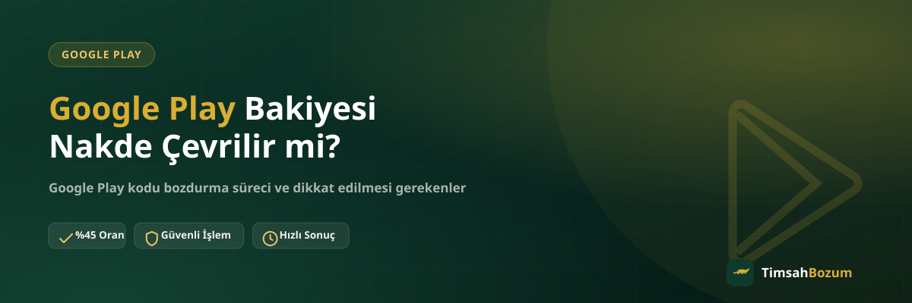

"Google Play bakiyem var, nakde çevirebilir miyim?" sorusu sık karşılaşılan ama cevabı çoğu kişinin tahmin ettiğinden farklı bir soru. Çünkü Google Play tarafında "bakiye" ile "kod" aynı şey değil, ve bu ayrım nakde çevirmenin mümkün olup olmadığını doğrudan belirliyor. Bu yazıda ikisi arasındaki farkı ve hangi durumda bozum yapılabildiğini netleştiriyoruz.
Google Play Bakiyesi ile Kod Arasındaki Fark Nedir?
Bir Google Play kodunu Play Store'a girip hesabına tanımladığında, kod artık kullanılmıştır ve tutarı Google hesabındaki bakiyeye dönüşür. Bu andan itibaren elindeki şey artık bir "kod" değil, hesabına bağlı bir "bakiye"dir. Google Play kod bozdurma hizmeti tam olarak bu ayrımın üzerine kurulu: TimsahBozum yalnızca henüz hiçbir hesaba tanımlanmamış, kullanılmamış kodları işleme alıyor. Hesabına yüklenmiş bir bakiye bozum kapsamına girmiyor.
Hesabıma Yüklenmiş Bakiyeyi Neden Bozduramıyorum?
Google, bir hesaba tanımlanan kodu geri alınamaz şekilde o hesaba bağlıyor; kod artık başka bir yere aktarılamıyor veya "geri çekilip" tekrar kod haline getirilemiyor. Bu, TimsahBozum'un bir kısıtlaması değil, Google Play'in kendi sisteminin çalışma şekli. Bu yüzden bir kodu bozdurmayı düşünüyorsan, "acaba geçerli mi" diye önce hesabına tanımlamak yerine kodu olduğu gibi paylaşman gerekiyor — tanımladıktan sonra bozum imkânı ortadan kalkıyor.
Hangi Google Play Kodları Bozduruluyor?
TimsahBozum'da yalnızca 500 TL ve 1.000 TL değerindeki kullanılmamış Google Play kodları işleme alınıyor; bunun dışındaki daha küçük tutarlı kodlar için işlem yapılmıyor. Elindeki kodun değeri bu iki tutardan biriyse ve kod henüz hiçbir hesaba tanımlanmadıysa, WhatsApp üzerinden süreci başlatabilirsin.
Kısmi Bozum Yapılıyor mu?
Hayır. Google Play kod tabanlı bir hizmet olduğu için kodun tamamı tek seferde değerlendiriliyor, "kodun yarısını bozdur" gibi bir seçenek bulunmuyor. Bu noktada Pokus, Paycell veya mobil ödeme gibi bakiye tabanlı hizmetlerden ayrılıyor: o hizmetlerde hesaptaki bakiyenin bir kısmını bozdurmak mümkünken, Google Play kodunda kodun değeri bir bütün olarak işleme giriyor.
Bakiyemi Kullanılmamış Bir Koda Geri Döndürebilir miyim?
Hayır, bu teknik olarak mümkün değil. Google Play bakiyesi bir kez hesaba tanımlandıktan sonra sadece Play Store içindeki uygulama, oyun veya abonelik satın alımlarında kullanılabilir; kodun ilk haline geri dönüştürülmesi ya da başka bir hesaba aktarılması söz konusu değil. Bu yüzden elinde kullanmayı düşünmediğin bir kod varsa, bozum kararını hesaba tanımlamadan önce vermen gerekiyor.
Google Play Bakiyesi Güvenilir Şekilde Nasıl Bozdurulur?
Doğru olan, kodu hiçbir hesaba tanımlamadan resmi WhatsApp hattımıza (+90 543 887 21 71) yazmak. Kodun değerini belirtiyorsun, güncel oranı teyit ediyorsun, onay sonrası kod bilgini eksiksiz paylaşıyorsun ve ödemen görüşülen yöntemle yapılıyor. Süreç boyunca Google hesabına erişim istenmiyor; şifre, e-posta doğrulama kodu veya kurtarma bilgisi hiçbir aşamada talep edilmiyor. Böyle bir bilgi isteyen herhangi bir kanal, resmi olduğunu iddia etse bile dolandırıcılık şüphesi taşır.
Yanlışlıkla Hesabıma Tanımladıysam Ne Yapmalıyım?
Kod hesaba tanımlandıktan sonra bozum işlemi yapılamıyor; bu noktadan sonra tek seçenek bakiyeyi Play Store içinde uygulama, oyun veya abonelik alışverişinde kullanmak. Bu yüzden elindeki kod bozum amaçlıysa, en güvenli yol paylaşmadan önce hiçbir yerde denememek ve doğrudan güncel bilgiyi WhatsApp'tan teyit etmek.
Play Store'daki Bakiyemi Görmek Bozum İçin Yeterli mi?
Hayır, bu ikisi farklı şeyler. Play Store ayarlarından hesabındaki bakiyeyi görüntüleyebilmen, o bakiyenin bozdurulabileceği anlamına gelmiyor — çünkü orada görünen tutar zaten bir hesaba tanımlanmış durumda. Bozum için aranan şey ekranda görünen bir rakam değil, elinde fiziksel ya da dijital olarak duran, henüz kullanılmamış kod. Bu ayrımı baştan bilmek, "bakiyem ekranda görünüyor, o zaman bozdurulur" gibi yanlış bir beklentiyle WhatsApp'a yazıp hayal kırıklığına uğramanı önler.
Kodu Kime Ait Bir Hesaba Tanımladığım Önemli mi?
Bozum açısından hesabın kime ait olduğu değil, kodun tanımlanıp tanımlanmadığı belirleyici. Kendi hesabına, aile hesabına veya başka birinin hesabına tanımlanmış olması fark etmez; kod bir kez bir Google hesabına bağlandıktan sonra bakiyeye dönüşür ve bozum kapsamı dışında kalır. Bu yüzden elinde birden fazla kod varsa ve bir kısmını bozdurmayı düşünüyorsan, hangisini kullanacağına karar verene kadar hiçbirini hesaba tanımlamaman en güvenli yaklaşım.
Kodu Birden Fazla Yerde Paylaşırsam Ne Olur?
Aynı kodu WhatsApp dışında farklı bir platformda da paylaşmışsan (bir forum, ilan sitesi ya da farklı bir alıcı), kodun kim tarafından hesaba tanımlandığını kontrol etmek mümkün değil. Kod bir kez kullanıldığında artık geçersiz sayılır ve bozum işlemi yapılamaz. Bu yüzden bozdurmayı planladığın bir kodu yalnızca tek bir kanalda, tercihen doğrudan resmi WhatsApp hattımızda paylaşman, hem senin hem işlemi yürüten tarafın aynı bilgiye güvenmesini sağlar.
Ilgili Yazilar
- Google Play Kodu Nasıl Bozdurulur? Adım Adım Rehber
- iTunes Hediye Kartı Kodu Nasıl Bozdurulur?
- Bozum İşlemi Yaparken Nelere Dikkat Etmeli
Özetle: Google Play'de bozdurulan şey bakiye değil, henüz kullanılmamış bir koddur. Elinde 500 TL veya 1.000 TL değerinde, hiçbir hesaba tanımlanmamış bir kod varsa WhatsApp hattımızdan yazarak güncel oranı teyit edebilir, işlemini başlatabilirsin.